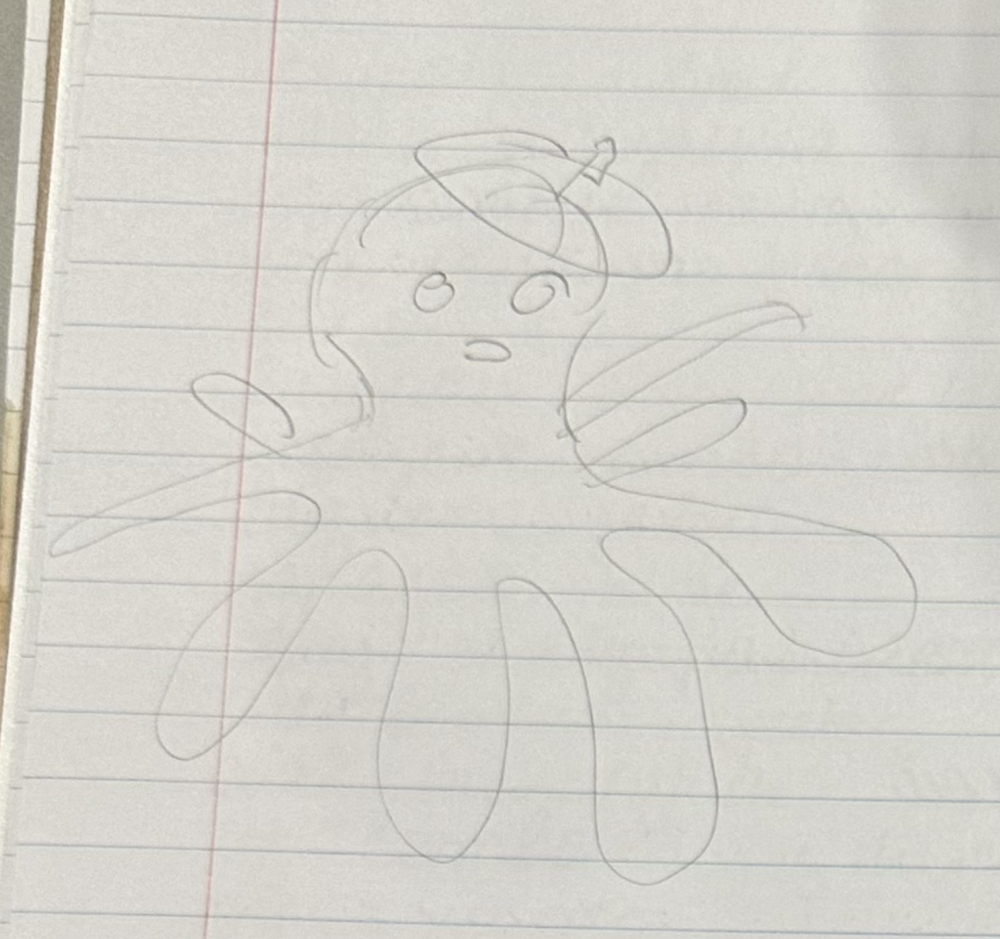

Week 2: Investigating CAD software
Project 1: Octopus with Beret
My first project was in TinkerCad. I saw an articulated octopus design on Thangs.com that I liked and was intrigued by. I wanted to put a hat on the octopus to satisfy the directions of the project for this week: "Choose a public 3D model to import into a CAD tools (Tinkercad AND Fusion360) and add a new feature to it, or combine 2 different products together." TinkerCad had lots of starter designs that I could choose from, like letters, basic shapes, and accessories. I came across a beret and figured that would be a fun challenge for myself as someone new to CAD software to position the beret on the octopus. I was also curious to see how the 3D printer would handle it.
I sketched out my design on paper, and then replicated it in TinkerCad.
When I exported the STL file to PrusaSlicer, I got a warning that my design was not stable, so I configured the settings to add supports. This was a learning experience because I had never done that before. The print took two and a half hours, and I started the print near the end of class, so I watched the first few layers get printed but I did not get to see the whole thing print.

Because I left in the beginning of the print, when I came back the next class my print was done, but there was no sign of the supports that the software told me would be there. I do not know if someone else removed them or if something didn't save, but the print turned out a success regardless.

Project 2: Unicorn Cat Box
My second project was a combination of a cat themed plant holder design I found and a unicorn horn design I found. I imported both of the designs to Fusion 360, and had a very difficult time moving and scaling the horn because I was unfamiliar with this program and it was less intuitive than TinkerCad. It also did not help that I was using a track pad instead of a mouse.
Here is the paper sketch of my design, and the model of it in prusa: (I forgot to save an image from Fusion 360 before closing the file)
I knew I would have to have supports for the horn, so I used prusa's automatically generated supports once again for this project.

Here is how the final product turned out: